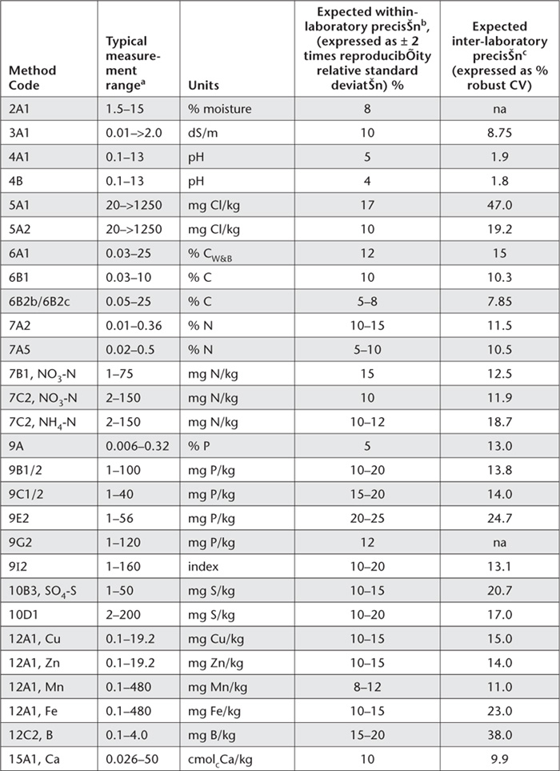

Laboratory staff and field officers who follow the methods described herein are well on the way to providing high quality and repeatable results to their clients. This is because the methods all contain sufficient detail to be adopted and used directly by people with appropriate qualifications, training and experience. The book also provides references to literature, from which background information and further details can be obtained, noting that operating conditions and instrument settings for some analytical finishes are instrument specific. Spectrometric ‘finishes’ are an example. For example, no two ICPAES instruments, even identical models from the same supplier, will have matching plasma and optical characteristics.
It follows that instrumental operating parameters must be carefully assessed and selected in order to achieve acceptable sensitivity and repeatability over the desired working range/s suggested in relevant methods. Similar care is needed to achieve freedom from potential interferences, be they physical effects (spectral, viscosity) or chemical effects (matrix, ionisation). Interference evaluation leading to elimination or quantitative correction is therefore a prerequisite in achieving accurate analytical results.
A laboratory with a reputation for providing accurate test results to clients should have a good reference library on quality assurance and quality systems (e.g. Garfield 1984; Taylor 1987; Juran and Gryna 1988; Hunt and Wilson 1990; Fox 1993; Holycombe 1994; Evans and Lindsay 1996; van Reeuwijk 1998; EURACHEM/CITAC Guide (2000); APHA 2005). The laboratory should also have three interdependent ‘quality’ systems (Lyons et al. 1999) viz.:
1. A Quality Management System – initiated by Management, committing Management to:
• adequately resource the laboratory by
employing qualified professional and technical staff, and providing training to them in the analytical procedures in use;
• adequately equip the laboratory (and associated in-field operations) with instrumentation suitable for the desired applications, and
• provide an environment that encourages safe working conditions, harmony, trust and a positive quality culture.
2. A Quality Assurance System – that ensures the laboratory has:
• documented and properly validated procedures and methods in place;
• checked calibrations either internally or by external suppliers of equipment that can affect the quality of a result (e.g. balances, standard masses, ovens, piston-operated volumetric apparatus, thermometers, spectrophotometers). (Calibrations ensure traceability to international standards of measurement, such as mass, temperature and volume.);
• an internal auditing process that initiates corrective/preventive actions when required (covers customer complaints, outliers in proficiency testing programs, etc.);
• active involvement in proficiency testing programs for soils, such as those offered by ASPAC and Wageningen interlaboratory soil exchanges, and
• external audits to AS/NZS ISO 17025 standard by a laboratory accreditation authority.
3. A Quality Control System – that identifies unwanted variation such as bias, contamination etc (Lyons et al. 1997). Quality control checks that can be included with each batch of samples include:
• blanks to check contamination;
• reference solutions run every 20–30 samples to identify calibration drift;
• repeats/duplicates that monitor precision of every batch;
• recovery spikes that indicate accuracy, particularly useful for trace- and ultra-trace analysis, and
• reference materials – to check trueness. The performance of each material can be control charted to monitor accuracy and precision.
• Accuracy. A measure of the quality of a result. It has two components – precision and trueness.
• Certified Reference Materials. CRMs are traceable to international standards and come with a certificate of assigned values along with stated uncertainties. CRMs are not available for empirical methods that make up the majority of methods in this book. They are available, however, for many of the methods that report total elemental concentrations.
• In-house Reference Materials. These are check soils collected in bulk within a laboratory that are used for batch quality control, and which have been characterised against CRMs or SRMs.
• Limit of Quantitation. The LOQ, sometimes referred to as practical quantitation limit (PQL) or limit of reporting (LOR), is the lowest concentration that can be determined with an acceptable level of uncertainty. Many different ways have been reported for calculating LOQ, so when reporting an LOQ for a method, how the estimate was made should be documented.
• Precision. A measure of aspects of random error. Two measures of precision termed repeatability and reproducibility are commonly quoted.
• Repeatability. A measure of precision of tests performed during a short interval in one laboratory by one operator using the same equipment.
• Reproducibility. The precision relating to more variable conditions; i.e. the same method on identical test items used by different operators with different equipment in different laboratories at different times. Within-laboratory reproducibility refers to reproducibility conditions in a single laboratory and provides a more practical estimate of precision and uncertainty of measurement for a method.
• Robust Coefficient of Variation (% Robust CV). Calculated as 100 times the normalised inter-quartile range, divided by the median, where the inter-quartile range (IQR) is obtained by subtracting the score at the 25th percentile (the first quartile) from the score at the 75th percentile (the third quartile). The normalised IQR equates to IQR × 0.7413, where the latter is a normalising factor.
• Secondary Reference Materials. SRMs may not come with a certificate or a value for uncertainty. Examples include expired CRMs and samples purchased from official proficiency testing programs, along with statistical data such as medians and MADs, where a MAD is the the median of the absolute deviations of a sample population, calculated as the median of the absolute values of the observations minus their median.
• Trueness. Describes how close a test result is to the accepted reference value for the quantity measured. Lack of trueness indicates bias.
• Uncertainty of Measurement. Usually expressed as an absolute or relative confidence interval within which, at the 95% confidence level, the true value is expected to lie.
• Working Range. The concentration range within which results will have an acceptable level of uncertainty. It is usually taken from the limit of quantitation (LOQ) to the highest standard in the undiluted extract/sample.
The methods described in the book are mostly empirical. Accordingly, it is the responsibility of each laboratory or field officer to validate the methods they select and use to ensure they are fit-for-purpose so that customers can have confidence in test results. The determination of bias and precision are minimum requirements in the validation/verification process. The term validation usually refers to the testing carried out for in-house methods or modifications to standard methods, while verification usually refers to the testing carried out for standard methods.
An assessment of the performance characteristics of a method must be done when validating a method. Follow-up assessments are warranted from time-to-time, particularly if there are changes to equipment, chemical suppliers and staff. The performance characteristic assessed should include:
• interference evaluation – leading to elimination, minimisation or quantitative correction;
• linearity – analysis of calibration standards;
• working range – involves determination of LOQ and highest standard, and will be influenced by linearity testing;
• precision – determination of within laboratory reproducibility and uncertainty of measurement, assuming bias is negligible, and
• trueness/bias – assessed by analysis of reference materials, sample spikes, comparison with standard methods (if available), and involvement in proficiency testing programs.
Several chapters in this book include graphs showing how % robust CVs were affected by concentrations for specified tests included in ASPAC inter-laboratory proficiency programs from 1997–2007. With few exceptions, measurement performances at particular concentrations were inferior (Rayment et al. 2000, 2009) to expectations from the Horwitz equation (Horwitz 1982 a, b) shown below.
In addition, performance characteristics expected for the more commonly used methods described in the book are summarised in Table App. 2.1. Specific information on LOQs and within laboratory precision was sourced from two major Australian soil testing laboratories. ASPAC provided the data on inter-laboratory precision, obtained from its inter-laboratory proficiency programs from 1997-2007, such as those reported by Peverill and Johnstone (1997) and Rayment et al. (2007).
Table App. 2.1. Summary detaÕs of expected measurement performance by method. The expected within-laboratory precisŠn is based on the sample weight used in the method descriptŠn. Note that within-laboratory precisŠn is based on two standard deviatŠns, whÕe % robust CVs are based on one standard deviatŠn within the inter-quartÕe range.

APHA (2005). Section 1020. Quality assurance. In Standard Methods for the Examination of Water and Wastewater, 21st Edn. (Eds AD Eaton, LS Clesceri, EW Rice and AE Greenberg) American Public Health Association, American Water Works Association, and Water Environment Federation, Maryland, USA.
EURACHEM/CITAC Guide (2000) Quantifying Uncertainty in Analytical Measurement, 2nd Edn. (Eds SLR Ellison, M Rosslein and A Williams) EURACHEM and CITAC.
Evans JR and Lindsay WM (1996) The Management and Control of Quality, 3rd Edn. West Publishing Co. St. Paul, MN.
Fox R (1993) Making Quality Happen, Six Steps to Total Quality Management. McGraw-Hill Book Company, Sydney.
Garfield FM (1984) Quality Assurance Principles for Analytical Laboratories. Association of Official Analytical Chemists, Arlington, Virginia, USA.
Holycombe D (1994) Method selection – the right tool for the job. Analytical Proceedings including Analytical Communications 31, 41–42.
Horwitz W (1982a) Evaluation of analytical methods used for regulation. Journal of the Association of Official Analytical Chemists 65, 525–530.
Horwitz W (1982b). The problems of utilizing trace analysis in regulatory analytical chemistry. Chemistry in Australia 49, 56-63.
Hunt DTE and Wilson AL (1990) The nature and importance of errors in analytical results. In The Chemical Analysis of Water – General Principles and Techniques, 2nd Edn. The Royal Society of Chemistry, Cambridge, Great Britain.
Juran JM and Gryna FM (1988) Juran’s Quality Control Handbook, 4th Edn. McGraw-Hill, Inc., New York.
Lyons DJ, Beech TA and Shelley BC (1997) Quality assurance/quality control principles and application in a laboratory context. In Quality Assurance Workshop Papers and Proceedings. (Eds DW Lester and GE Rayment) pp. 1–6. Australian Soil and Plant Analysis Council, Inc., University of Tasmania, Launceston, Tasmania.
Lyons DJ, Shelley BC, Liddy H, van Dijk D and McKinley P (1999) Quality analysis and laboratory accreditation. Workshop Notes. 6th International Symposium on Soil and Plant Analysis, Brisbane, 22–26 March 1999. Australasian Soil and Plant Analysis Council, Melbourne.
NATA (2009). Guidelines for the Validation and Verification of Chemical Test Methods. National Association of Testing Authorities Technical Note 17, April 2009.
Peverill K and Johnstone P (1997) National Soil Quality Assurance Program Report 1997. Australasian Soil and Plant Analysis Council Inc., c/- State Chemistry Laboratory, Victoria.
Rayment GE, Hill R, Peverill K and Daly B (2009) Initiatives of the Australasian Soil and Plant Analysis Council to assess the measurement quality of common methods for soil and plant analysis in Australasia. Communications in Soil Science and Plant Analysis 40, 54–64.
Rayment GE, Miller RO and Sulaeman E (2000) Proficiency testing and other interactive measures to enhance analytical quality in soil and plant laboratories. Communications in Soil Science and Plant Analysis 31/32, 1513–1530.
Rayment GE, Peverill KI, Hill RJ, Daly BK, Ingram C and Marsh J (2007) ASPAC Soil Proficiency Testing Program Report 2004–05. Australasian Soil and Plant Analysis Council Inc., Melbourne.
Taylor JK (1987) Quality Assurance of Chemical Measurements. Lewis Publications. www.crcpress.com.
van Reeuwijk LP (compiler) (1998) Guidelines for Quality Management in Soil and Plant Laboratories. FAO Soils Bulletin 74. International Soil Reference and Information Centre and Food and Agriculture Organization of the United Nations, Rome.